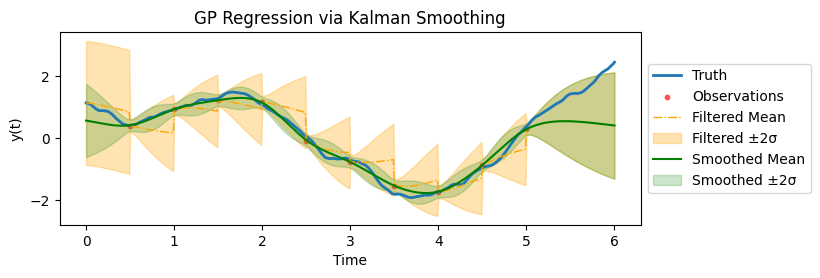

In this blog post, I will describe how one could formulate an one-dimensional temporal Matérn Gaussian process as a stochastic differential equation. This dynamic formulation of a Gaussian process allows one to do regression with linear computational cost.
The detailed mathematical derivations are omitted in the blog post, but can be found here. The Python implementation codes can be found here. A large portion of the post is based on Solin (2016) and Sarkka, Solin, and Hartikainen (2013).

Basic Gaussian Process Regression
Consider an one-dimensional, scalar output Gaussian process (GP) \(f \sim \mathcal{GP}(0, k)\) with zero mean and kernel \(k\). This GP \(f\) is defined on input space \(\mathbb{R}\) and its output space is \(\mathbb{R}\). To help with the subsequent exposition, it is beneficial to view the input space as a timeline, and the GP models an univariate time series.
When one make observations \(\boldsymbol{y} \in \mathbb{R}^{n_\text{obs}}\) at observation times \(\boldsymbol{x} \in \mathbb{R}^{n_\text{obs}}\), we assume the observations are noisy and follow
\[ y_i = f(x_i) + \varepsilon_i, \qquad \varepsilon_i \stackrel{\text{i.i.d.}}{\sim} N(0, \sigma_{\text{obs}}^2), \qquad \forall i = 1, 2, \ldots, n_\text{obs} \]
which allow conjugacy in regression. We denote the observed data as \(\mathcal{D} = \{\boldsymbol{x}, \boldsymbol{y}\}\). Following GP regression formula, we have the predictive distribution at new test points \(X_*\) as
\[ \begin{split} y_* ~|X_*, \mathcal{D}, \sigma_\text{obs}^2 &\sim N_{n}(\mu_{y_* | \mathcal{D}}, K_{y_* | \mathcal{D}}), \\ \mu_{y_* | \mathcal{D}} &= K_*^T (K + \sigma_\text{obs}^2 I_{n_\text{obs}})^{-1} y,\\ K_{y_* | \mathcal{D}} &= K_{**} - K_*^T (K + \sigma_\text{obs}^2 I_{n_\text{obs}})^{-1}K_*. \end{split} \]
where \(K(\cdot,\cdot)\) is the Gram matrix using the kernel \(k\). The computation of predictive distribution is \(O(n_\text{obs}^3)\) using the above formula, since there exists an inversion of \(n_\text{obs} \times n_\text{obs}\) matrix.
Stationary Kernels and Spectral Densities
A GP is a stationary stochastic process if its kernel \(k\) is a stationary kernel, in the sense that the kernel between two points \(x\) and \(x'\) can be determined solely by their distance, i.e.
\[ k(x, x') = k(r), \qquad r = \| x - x' \|. \]
Two commonly used stationary kernels are the radial basis function (RBF) kernel, also known as the squared exponential (SE) kernel, with variance \(\sigma^2\) and lengthscale \(l\)
\[ k_\text{RBF}(x, x') = \sigma^2 \exp \left[ -\frac{\| x - x'\|}{2l^2} \right] \] and the Matérn kernel with variance \(\sigma^2\), lengthscale \(l\), and smoothness \(\nu\)
\[ k_\text{Matérn} (x,x') = \sigma^2 \frac{2^{1-\nu}}{\Gamma(\nu)} \left( \sqrt{2\nu} \frac{\| x - x'\|}{l} \right)^\nu K_\nu\left( \sqrt{2\nu} \frac{\| x - x'\|}{l} \right) \] where \(\Gamma\) is the Gamma function and \(K_\nu\) is the modified Bessel function of the second kind. With Matérn kernels, it is common to consider smoothness parameter \(\nu\) to be half-integers (i.e. \(\nu = p + 1/2\) for \(p \in \mathbb{Z}\)). In such cases, we have a simpler expression for the kernel, which is given by
\[ k_\text{Matérn} (x,x') = \sigma^2 \exp \left( - \sqrt{2p + 1} \frac{\|x - x'\|}{l} \right) \frac{p!}{(2p)!} \sum_{i = 0}^p \frac{(p+i)!}{i! (p-i)!} \left( \frac{2 \sqrt{2p + 1} \| x - x'\|}{l} \right)^{p - i}. \]
For \(\nu = 1/2\) (thus \(p = 0\)), we have
\[ k_{\text{Matérn}-1/2} (x,x') = \sigma^2 \exp \left( - \frac{\| x - x'\|}{l}\right). \]
For \(\nu = 3/2\) (thus \(p = 1\)), we have
\[ k_{\text{Matérn}-3/2} (x,x') = \sigma^2 \left( 1 + \frac{\sqrt{3}\|x - x'\|}{l} \right) \exp \left( - \frac{\sqrt{3}\| x - x'\|}{l}\right). \]
It can also be shown that \(k_{\text{Matérn}-\nu} \to k_\text{SE}\) as \(\nu \to \infty\).
The stationarity of these kernels allow us to assess their spectrum using Fourier transform. After standard Fourier transform computations, one can find the following spectral densities
\[ \begin{split} S_\text{SE}(\omega) &= 2 \pi l^2 \exp(-2\pi^2 l^2 \omega^2) \\ S_\text{Matérn}(\omega) &= \frac{\Gamma(\nu + 1/2) (2\nu)^\nu}{\sqrt{\pi} \Gamma(\nu) l^{2\nu}} \frac{1}{(\omega^2 + 2\nu / l^2)^{\nu + 1/2}} \\ S_{\text{Matérn}-1/2}(\omega) &= \frac{1}{\pi l} \frac{1}{\omega^2 + 1/l^2} \\ S_{\text{Matérn}-3/2}(\omega) &= \frac{2 \sqrt{3}^3}{\pi l^3} \frac{1}{(\omega^2 + 3/l^2)^2}. \end{split} \]
The SDE formulation we will be presenting below would only allow reformulation of stationary GPs. In particular, we will focus on the Matérn GPs as they are both flexible and commonly used model classes.
SDE Formulation
First of all, a Gaussian process is closed under linear operators, i.e. for a linear operator \(\mathcal{L}\) and a Gaussian process \(f\), we know that \(\mathcal{L} f\) is still a Gaussian process (Särkkä 2011). Since addition, scalar multiplication, and (partial) differentiation are all linear operators, the solution \(f\) of the following equation would be a Gaussian process
\[ a_0 f(t) + a_1 \frac{df(t)}{dt} + a_2 \frac{d^2 f(t)}{dt^2} + \cdots + a_m \frac{d^m f(t)}{dt^m} = w(t) \]
where \(w(t)\) is a white noise process with spectral density \(\Sigma\) and is a Gaussian process.
Consider the random vector \(\boldsymbol{f} = [f, f^{(1)}, f^{(2)}, \ldots, f^{(m)}]^T\) and the random process \(\boldsymbol{w} = [w_1, w_2, \ldots, w_{m-1}, w]^T\). We can recover the solution \(f\) via \(f = \boldsymbol{H} \boldsymbol{f}\) where \(\boldsymbol{H} = [1, 0, \ldots, 0]\) and the white noise process \(w\) via \(w =\boldsymbol{L} \boldsymbol{w}\) where \(\boldsymbol{L} = [0, \ldots, 0, 1]\). After rearrangements, we can convert the above equation into the following SDE
\[ \frac{d}{dt} \boldsymbol{f}(t) = \boldsymbol{F} \boldsymbol{f}(t) + \boldsymbol{L} \boldsymbol{w}(t) \]
where
\[ \boldsymbol{F} = \begin{bmatrix} 0 & 1 & 0 & 0 & \cdots & 0 \\ 0 & 0 & 1 & 0 &\cdots & 0 \\ \vdots & & \ddots & \ddots & & \vdots \\ 0 & &&& 1 & 0 \\ -a_0 & &\cdots&\cdots& & -a_m \\ \end{bmatrix}. \]
Notice that the above SDE can be solved exactly using integrating factor and Itô lemma, which gives us
\[ \boxed{\begin{split} \boldsymbol{f}(t) | \boldsymbol{f}(t') &\sim \boldsymbol{N} \left(A_t , Q_t \right) \\ A_t &= \exp[\boldsymbol{F}(t-t')] \boldsymbol{f}(t') \\ Q_t &= \int_{t'}^t \exp[\boldsymbol{F}(t - s)] \boldsymbol{L} \Sigma L^T \exp[\boldsymbol{F}^T (t - s)] ds. \end{split}} \]
Finally, one should find the correct specifications of \(\boldsymbol{F}\) and \(\Sigma\) such that the solution GP of the SDE is the GP of interest. For example, with
\[ F = \begin{bmatrix} 0 & 1 \\ -\lambda^2 & -2\lambda \end{bmatrix}, \quad L = \begin{bmatrix} 0 \\ 1 \end{bmatrix}, \quad H = \begin{bmatrix} 1 & 0 \end{bmatrix}, \qquad \Sigma = 4\lambda^3 \sigma^2, \qquad P_\infty = \begin{bmatrix} \sigma^2 & 0 \\ 0 & \lambda^2 \sigma^2 \end{bmatrix} \]
the solution \(f(t) = {H} \boldsymbol{f}(t)\) of SDE
\[ \frac{d}{dt} \boldsymbol{f}(t) = \boldsymbol{F} \boldsymbol{f}(t) + {L} \cdot \boldsymbol{w}(t). \]
is a zero-mean GP with Matérn 3/2 kernel.
Regression as Kalman Smoothing
Assume we have made observations \(\boldsymbol{y} \in \mathbb{R}^{n_\text{obs}}\) at observation times \(\boldsymbol{x} \in \mathbb{R}^{n_\text{obs}}\), we assume the observations are noisy and follow
\[ y_i = f(x_i) + \varepsilon_i, \qquad \varepsilon_i \stackrel{\text{i.i.d.}}{\sim} N(0, \sigma_{\text{obs}}^2), \qquad \forall i = 1, 2, \ldots, n_\text{obs}. \]
We can construct the following system
\[ \begin{cases} \frac{d}{dt} \boldsymbol{f}(t) &= \boldsymbol{F} \boldsymbol{f}(t) + {L} \cdot \boldsymbol{w}(t) \\ {y}_i &= \boldsymbol{H} \boldsymbol{f}({x}_i) + \varepsilon_i \qquad \forall i = 1, 2, \ldots, n_\text{obs} \end{cases} \]
which is a state-space model. The regression task is to find the distribution of \(\boldsymbol{f} | \boldsymbol{y}\), which is equivalent to applying the Kalman smoothing to the above state-space model.
We further assume that the observations are made at regular time intervals with gap \(\Delta\). This makes the state-space model into:
\[ \begin{aligned} f_{k+1} &= \Phi\,f_k + e_k,\quad e_k \sim \mathcal{N}(0, Q), \\ y_k &= H\,f_k + \epsilon_k,\quad \epsilon_k \sim \mathcal{N}(0, \sigma_\text{obs}^2). \end{aligned} \]
for \(k = 1, 2, \ldots, n_\text{obs}\) with
\[ \Phi = \exp[\boldsymbol{F}\Delta], \qquad Q = P_\infty - \Phi P_\infty \Phi^T. \]
We are ready to present the Kalman filter and RTS smoother.
Kalman Filter
The Kalman filter proceeds in two main steps - propagation and assimilation.
Propagation Step
Predict the state and covariance at time \(k+1\) given the filtered estimates at time \(k\): \[ \begin{aligned} \hat{f}_{k+1|k} &= \Phi\,\hat{f}_{k|k}, \\ P_{k+1|k} &= \Phi\,P_{k|k}\,\Phi^\top + Q. \end{aligned} \]
Assimilation Step
When an observation \(y_{k+1}\) is available, update the prediction as follows:
Innovation: \[ \nu_{k+1} = y_{k+1} - H\,\hat{f}_{k+1|k}. \]
Innovation covariance: \[ S_{k+1} = H\,P_{k+1|k}\,H^\top + \sigma_\text{obs}^2. \]
Kalman gain: \[ K_{k+1} = \frac{P_{k+1|k}\,H^\top}{S_{k+1}}. \]
Updated state estimate: \[ \hat{f}_{k+1|k+1} = \hat{f}_{k+1|k} + K_{k+1}\,\nu_{k+1}. \]
Updated covariance: \[ P_{k+1|k+1} = P_{k+1|k} - K_{k+1}\,H\,P_{k+1|k}. \]
If no observation is available at a given time step, then the predicted state and covariance are carried forward:
\[ \hat{f}_{k+1|k+1} = \hat{f}_{k+1|k}, \quad P_{k+1|k+1} = P_{k+1|k}. \]
Additionally, the log-likelihood contribution from the \((k+1)\)-th observation is computed as:
\[ \log p(y_{k+1} \mid \text{past}) = -\frac{1}{2}\left[\log(2\pi) + \log(S_{k+1}) + \frac{\nu_{k+1}^2}{S_{k+1}}\right]. \]
RTS Smoother
After running the forward Kalman filter, the Rauch–Tung–Striebel (RTS) smoother refines the state estimates by incorporating future observations. For \(k = n_\text{obs}-1, n_\text{obs}-2, \dots, 1\):
Smoothing gain: \[ C_k = P_{k|k}\,\Phi^\top\,(P_{k+1|k})^{-1}. \]
Smoothed state: \[ \hat{f}_{k|n_\text{obs}} = \hat{f}_{k|k} + C_k\left(\hat{f}_{k+1|n_\text{obs}} - \hat{f}_{k+1|k}\right). \]
Smoothed covariance: \[ P_{k|n_\text{obs}} = P_{k|k} + C_k\left(P_{k+1|n_\text{obs}} - P_{k+1|k}\right)C_k^\top. \]
Comparison and Implementation Details
The computational costs of GP regression via the vanilla approach is cubic, i.e. \(O(n_\text{obs}^3)\), whereas the SDE approach is linear, i.e. \(O(n_\text{obs})\).
Both approaches are in fact equivalent, so the computational gain of the SDE approach has no hidden costs.

Finally, one could do likelihood training with the SDE approach which gives maximum likelihood estimates of the hyperparameters of the prior distribution (thus we are doing empirical Bayes instead of standard Bayes).
Some remarks on implementation. The plots above are all using a more granular time grid than the observation time grid, as can be observed from the smooth posterior mean. This means, we are filtering at times where there are no observations (so only propagate, not assimilate) and then correct them in the filtering step. This will bump up the computational costs (linearly).
In practice, if prediction at future time is the only downstream task of GP regression, then one could simply do filtering till the last observation time and not do any smoothing. This would drastically reduce the computational cost as we are doing updating at observation times (rather than the more granular regression time grid) and can skip the smoothing.